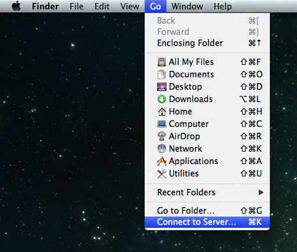
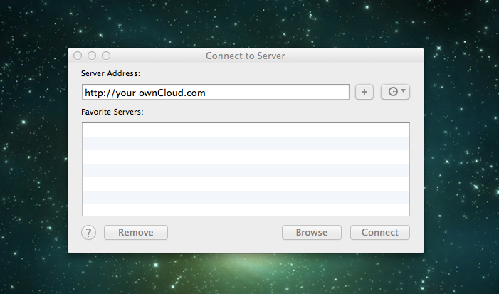
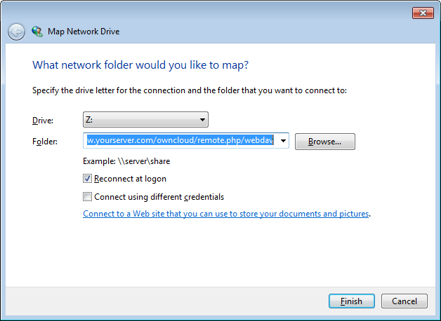

Accessing Files Using WebDAV¶
Web Distributed Authoring and Versioning (WebDAV) is a Hypertext Transfer Protocol (HTTP) extension that facilitates collaboration between users in editing and managing documents and files stored on web servers. Using WebDAV, you can access your ownCloud instance on every platform using the web interface. You can also optionally integrate your ownCloud access with your desktop.
Note
In the following examples, You must adjust example.org/ to the URL of your ownCloud server installation.
Accessing Files Using Linux¶
You can access files in Linux operating systems using the following methods:
Accessing Files with Gnome 3 and Nautilus File Manager¶
The URL that you have to use to connect to the ownCloud installation using Nautilus File Manager is:
davs://example.org/owncloud/remote.php/webdav
Note
If your server connection is not HTTPS-secured, use dav:// instead of davs://.

Accessing Files with KDE and Dolphin File Manager¶
To access Files using KDE:
Click in the address area and enter:
webdav://example.org/owncloud/remote.php/webdav
To access files using Dolphin File Manager:
- Open Dolphin and click “Network” in the left hand “Places” column.
- Click on the icon labeled Add a Network Folder. The resulting dialog should appear with WebDAV already selected.
- If WebDav is not selected, select it.
- Click Next.
- Enter the following settings: * Name: The name you want to see in the Places bookmark, for example ownCloud. * User: The ownCloud username you used to log in, for example admin. * Server: The ownCloud domain name, for example example.org (without http:// before or directories afterwards). * Folder – Enter the path owncloud/remote.php/webdav.
- (Optional) Check the “Create icon checkbox” for a bookmark to appear in the Places column.
- (Optional) Provide any special settings or an SSL certificate in the “Port & Encrypted” checkbox.
Mounting the File System and Accessing with a Command Line¶
To mount the file system and access files using a command line:
Install the WebDAV support using the davfs package. For example, on Debian/Ubuntu, you can use:
sudo apt-get install davfs2
Reconfigure davfs2 to allow access to normal users (select Yes when prompted):
sudo dpkg-reconfigure davfs2
Specify any users that you want to have mount and share privileges in the davfs2 group:
sudo usermod -aG davfs2 <user>
Edit the /etc/fstab file and add the following line for each user for whom you want to give mount privileges for the folder:
example.org/owncloud/remote.php/webdav /home/<username>/owncloud davfs user,rw,noauto 0 0
For each user for whom you wants to give mount privileges:
Create the folders owncloud/ and .davfs2/ in your home directory.
Create the file secrets inside the .davfs2/ folder and populate it with the following:
example.org/owncloud/remote.php/webdav <username> <password>
Ensure that the file is writable by only you by using the file manager or by issuing the following command:
``chmod 600 ~/.davfs2/secrets``
Run the following command:
``mount ~/owncloud``
To automatically mount the folder on login, add the mount ~/owncloud command to the ./.bashrc file.
Known Issues¶
Problem: Resource temporarily unavailable
Solution: If you experience trouble when you create a file in the directory, edit /etc/davfs2/davfs2.conf and add:
use_locks 0
Problem: Certificate warnings
Solution: If you use a self-signed certificate, you will get a warning. To change this, you need to adress the “pem”-file of your certificate. At first copy mycertificate.pem to - for example - /etc/davfs2/certs/. After that edit /etc/davfs2/davfs2.conf and uncomment the line servercert (or add it). Now add the path of your certificate. In this this example:
servercert /etc/davfs2/certs/mycertificate.pem
Accessing Files Using MAC OSX¶
Note
The MAC OSX Finder suffers from a series of implementation problems and should only be used if the ownCloud server runs on Apache and mod_php.
To access files through the MAC OSX Finder:
- Choose Go > Connect to Server.
The “Connect to Server” window opens.
- Specify the address of the server in the Server Address field.
For example, the URL address used to connect to the ownCloud installation from the MAC OSX Finder is:
http://example.org/owncloud/remote.php/webdav
- Click Connect.
The device connects to the server.
For added details about how to connect to an external server using MAC OSX, check the respective vendor documentation .
Accessing Files Using Microsoft Windows¶
When using Microsoft Windows, a separate WebDAV client is recommended to access the files from your server.You can choose a suitable WebDav client from the WebDav Project page .
If you must use the native implementation, you can map ownCloud to a new drive. Mapping to a drive enables you to browse files stored on an ownCloudserver the way you would files stored in a mapped network drive.
Using this feature requires network connectivity. If you want to store your files offline, use the ownCloud Client to sync all files on your ownCloud to one or more directories of your local hard drive.
Note
Prior to mapping your drive, you must permit the use of Basic Authentication in the Windows Registry. The procedure is documented in KB841215 and differs between Windows XP/Server 2003 and Windows Vista/7. Please follow the Knowledge Base article before proceeding, and follow the Vista instructions if you run Windows 7.
Mapping Drives With the Command Line¶
The following example shows how to map a drive using the command line. To map the drive:
Open a command prompt in Windows.
Enter the following line in the command prompt to map to the computer Z drive:
net use Z: https://<drive_path>/remote.php/webdav /user:youruser yourpassword
where <drive_path> is example.org/owncloud
For example: net use Z: https://example.org/owncloud/remote.php/webdav /user:youruser yourpassword
The computer maps the files of your ownCloud account to the drive letter Z.
Note
Though not recommended, you can also mount the ownCloud server using HTTP, leaving the connection unencrypted. If you plan to use HTTP connections on devices while in public place, we strongly recommend using a VPN tunnel to provide the necessary security.
An alternative command syntax is:
net use Z: \\example.org@ssl\owncloud\remote.php\webdav /user:youruser yourpassword
Appending /persistent makes the connection persistent across reboots. (??Example??)
You can also mount your ownCloud via HTTP, leaving the connection unencrypted.
Mapping Drives With Windows Explorer¶
To map a drive using the Microsoft Windows Explorer:
- Migrate to your computer in Windows Explorer.
- Right-click on Computer entry and select Map network drive... from the drop-down menu.
- Choose a local network drive to which you want to map ownCloud.
- Specify the address to your ownCloud instance, followed by /remote.php/webdav.
For example:
https://example.org/owncloud/remote.php/webdavNote
For SSL protected servers, check Reconnect at logon to ensure that the mapping is persistent upon subsequent reboots. If you want to connect to the ownCloud server as a different user, check Connect using different credentials.
Mapping WebDAV on Windows Explorer
{kind=link}
- Click the Finish button.
Windows Explorer maps the network drive, making your ownCloud instance available.
Accessing Files Using Cyberduck¶
Cyberduck is an open source FTP and SFTP, WebDAV, OpenStack Swift, and Amazon S3 browser designed for file transfers.
Note
This example uses Cyberduck version 4.2.1.
To use Cyberduck:
- Specify a server without any leading protocol information. For example:
example.org
2. Specify the appropriate port. The port you choose depends on whether or not your ownCloud server supports SSL. Cyberduck requires that you select a different connection type if you plan to use SSL. For example:
80 (for WebDAV) 443 (for WebDAV (HTTPS/SSL))
- Use the ‘More Options’ drop-down menu to add the rest of your WebDAV URL into the ‘Path’ field. For example:
remote.php/webdav
Cyberduck enables file access to the ownCloud server.
Known Problems¶
- Problem
- Windows does not connect using HTTPS.
- Solution
- The Windows WebDAV Client might not support Server Name Indication (SNI) on encrypted connections. If you encounter an error mounting an SSL-encrypted ownCloud instance, contact your provider about assigning a dedicated IP address for your SSL-based server.
- Problem
- You receive the following error message: Error 0x800700DF: The file size exceeds the limit allowed and cannot be saved.
- Solution
Windows limits the maximum size a file transferred from or to a WebDAV share may have. You can increase the value FileSizeLimitInBytes in HKEY_LOCAL_MACHINESYSTEMCurrentControlSetServicesWebClientParameters by clicking on Modify.
To increase the limit to the maximum value of 4GB, select Decimal, enter a value of 4294967295, and reboot Windows or restart the WebClient service.
Todo
document registry keys on file size limit and not complaining in no network cases
Using the Desktop Sync Client to Access Files¶
Some applications enable you to only save to a local folder. To circumvent this issue, you can install the ownCloud sync clients.
Using Mobile Apps to Access Files¶
Todo
Needs updating
To connect to your ownCloud server with any ownCloud mobile apps, use the base URL and folder only:
example.org/owncloud
Note
There is no need to add remote.php/webdav as you do for other WebDAV clients.
Mobile apps currently exist for both Android and webOS. Feel free to contribute, if you can!
In addition to the mobile apps provided by ownCloud, you can use other apps to connect to ownCloud from your mobile device using WebDAV. WebDAV Navigator is a good (proprietary) app for Android devices, iPhones, and BlackBerry devices.
The URL for these is:
example.org/owncloud/remote.php/webdav